Recipe Library
Filters
Meal
Protein
Seafood
Diet
Effort
Status
144 recipes
- Side · 21 min · serves 8American Potato Salad
- Breakfast · 20 min · serves 6Bacon (in Oven)
- Dinner · 30 min · serves 6Baked Cod with Tomatoes
 Dinner · 70 min · serves 6Baked Eggplant Parmesan
Dinner · 70 min · serves 6Baked Eggplant Parmesan Dinner · 50 min · serves 6Baked Feta Tomato Pasta
Dinner · 50 min · serves 6Baked Feta Tomato Pasta Dinner · 65 min · serves 6Baked Tandoori Chicken
Dinner · 65 min · serves 6Baked Tandoori Chicken Dinner · 85 min · serves 6Baked Vegetable Frittata
Dinner · 85 min · serves 6Baked Vegetable Frittata Dinner · 30 min · serves 6Beef and Broccoli
Dinner · 30 min · serves 6Beef and Broccoli- Dinner · 55 min · serves 6Beef Kofta with Roasted Vegetables
 Dinner · 30 min · serves 6Black Bean Burgers
Dinner · 30 min · serves 6Black Bean Burgers- Dinner · 20 min · serves 6Black Bean Tacos
- Dinner · 35 min · serves 6Black-Eyed Peas and Greens
- Dinner · 15 min · serves 6Blackened Tilapia
- Dinner · 40 min · serves 6Brazilian Fish Stew (Moqueca)
- Dinner · 40 min · serves 6Brazilian Rice
- Breakfast · 60 min · serves 10Breakfast Burritos
- Dinner · 40 min · serves 6Cajun Potato Soup
 Dinner · 40 min · serves 6Canned Salmon Patties
Dinner · 40 min · serves 6Canned Salmon Patties- Dessert · 3.5 hr · serves 24Carrot Cake Cookies
- Dinner · 50 min · serves 6Cava Night
- Dinner · 35 min · serves 6Chicken & Rice Bowls
- Dinner · 45 min · serves 6Chicken & Stuffing Casserole
- Dinner · 45 min · serves 6Chicken Drumsticks Dry Rub
- Dinner · 40 min · serves 6Chicken Kabobs
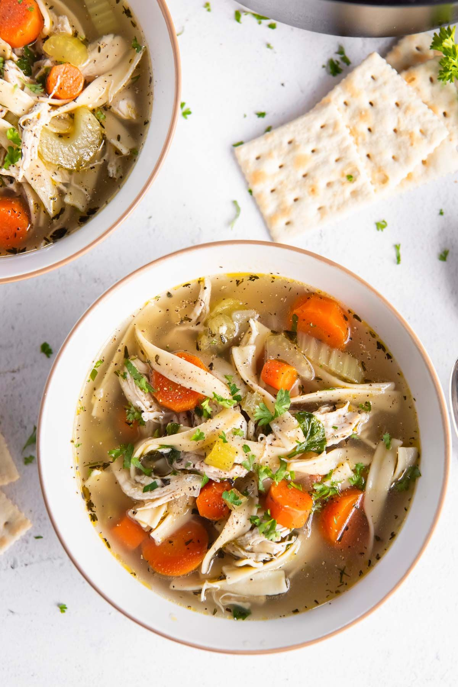
Dinner · 55 min · serves 6Chicken Noodle Soup- Dinner · 25 min · serves 6Chicken or Steak Ramen
 Dinner · 40 min · serves 6Chicken Piccata Meatballs
Dinner · 40 min · serves 6Chicken Piccata Meatballs- Lunch · 10 min · serves 6Chicken Salad
- Dinner · 40 min · serves 6Chicken Shawarma Bowls
 Dinner · 45 min · serves 6Chicken Tortilla Soup
Dinner · 45 min · serves 6Chicken Tortilla Soup- Dinner · 60 min · serves 8Chili
 Dinner · 25 min · serves 6Chinese Cashew Chicken
Dinner · 25 min · serves 6Chinese Cashew Chicken- Dessert · 8 min · serves 2Chocolate-Covered Graham Crackers with Pepitas
- Dinner · 50 min · serves 6Chunky Ham & White Bean Soup
- Dinner · 30 min · serves 6Cod Fish Tacos with Cumin-Lime Slaw
 Dinner · 30 min · serves 6Copycat Panda Express Teriyaki Chicken
Dinner · 30 min · serves 6Copycat Panda Express Teriyaki Chicken Dinner · 50 min · serves 6Corn Flake Chicken
Dinner · 50 min · serves 6Corn Flake Chicken- Dinner · 40 min · serves 6Corn Flake Fish
- Dinner · 45 min · serves 6Creamy Pesto Pasta Salad
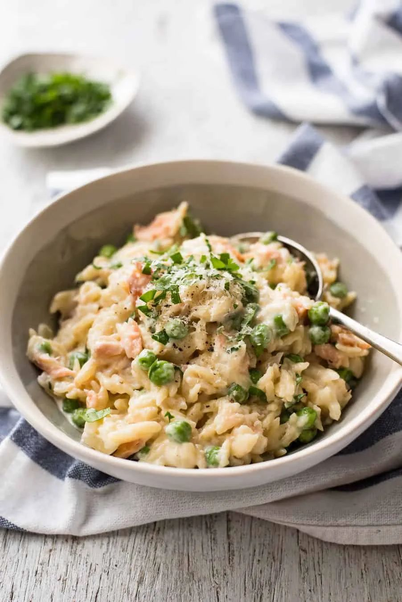
Dinner · 20 min · serves 6Creamy Salmon Orzo with Peas- Dinner · 30 min · serves 6Cuban Picadillo
- Dinner · 35 min · serves 6Curry Chicken (Red Curry Chicken & Rice)
 Dinner · 2 hr · serves 6Dal (Yellow Split Pea Curry)
Dinner · 2 hr · serves 6Dal (Yellow Split Pea Curry)- Dinner · 35 min · serves 6Enfrijoladas (Tortillas in Black Bean Sauce)
- Dinner · 50 min · serves 6Falafel Bowls
 Dinner · 2 hr · serves 6Filipino Pork Adobo with Pineapple
Dinner · 2 hr · serves 6Filipino Pork Adobo with Pineapple Dinner · 35 min · serves 6Fish Chowder
Dinner · 35 min · serves 6Fish Chowder- Dinner · 45 min · serves 6Gigantes Plaki (Greek Baked Giant Beans)
- Snack · 12 min · serves 8Greek Artichoke Dip
 Dinner · 40 min · serves 6Greek Chicken Bowls
Dinner · 40 min · serves 6Greek Chicken Bowls- Dinner · 60 min · serves 6Greek Turkey & Rice Skillet
- Dinner · 45 min · serves 6Greek Turkey Burgers
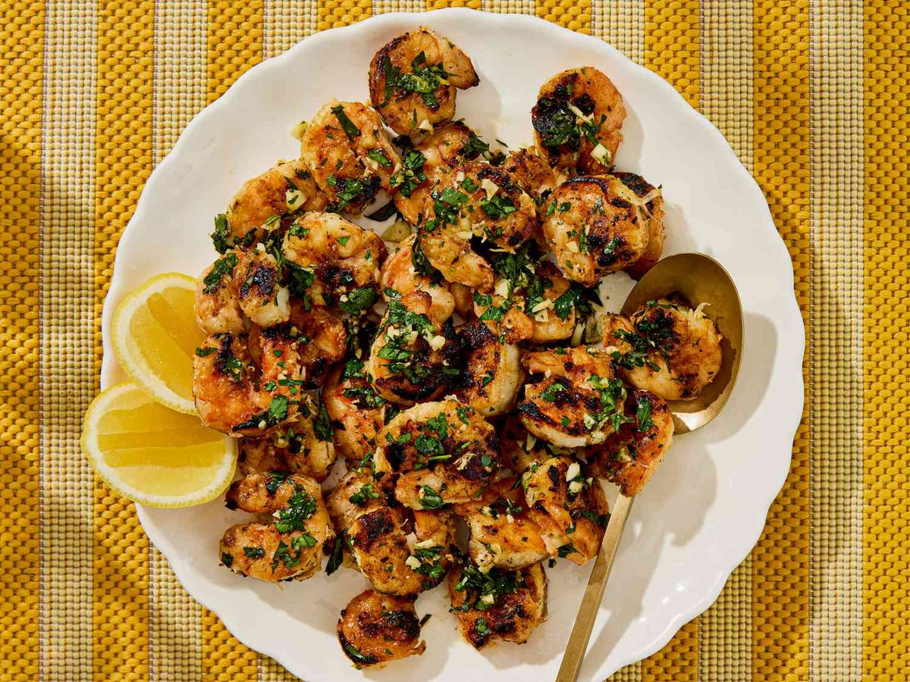
Dinner · 75 min · serves 6Grilled Lemon Garlic Shrimp- Dinner · 30 min · serves 6Grilled Pork Chops
- Dinner · 30 min · serves 6Grilled Steak
- Dinner · 25 min · serves 6Ground Turkey Stir Fry
- Breakfast · 15 min · serves 1Ham & Cottage Cheese Hot Pocket Hack
- Dinner · 45 min · serves 6Harissa Chicken Bowls
- Dinner · 30 min · serves 6Healthier Hamburger Helper
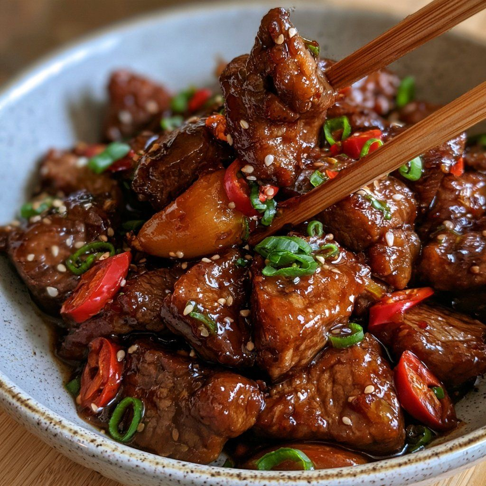
Dinner · 40 min · serves 6Honey Garlic Glazed Beef Dinner · 30 min · serves 6Honey Garlic Salmon
Dinner · 30 min · serves 6Honey Garlic Salmon- Dinner · 20 min · serves 6Honey Garlic Tilapia
- Dinner · 25 min · serves 6Huevos Rancheros Bowls
- Dinner · 30 min · serves 6Inside-Out Egg Rolls
 Dinner · 50 min · serves 6Instant Pot Butter Chicken
Dinner · 50 min · serves 6Instant Pot Butter Chicken Dinner · 45 min · serves 6Instant Pot Chicken Cacciatore
Dinner · 45 min · serves 6Instant Pot Chicken Cacciatore Dinner · 85 min · serves 6Jambalaya
Dinner · 85 min · serves 6Jambalaya Dinner · 25 min · serves 6Korean Beef Bowls
Dinner · 25 min · serves 6Korean Beef Bowls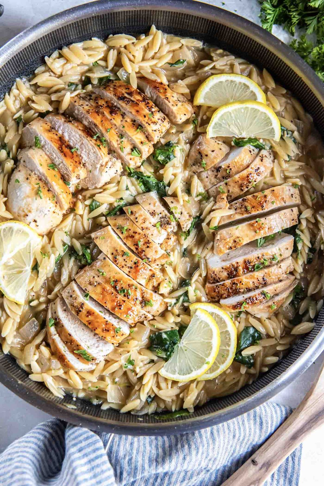
Dinner · 45 min · serves 6Lemon Chicken Orzo Dinner · 30 min · serves 6Lemon Garlic Baked Salmon in Foil
Dinner · 30 min · serves 6Lemon Garlic Baked Salmon in Foil- Dinner · 20 min · serves 6Lemon Garlic Butter Tilapia
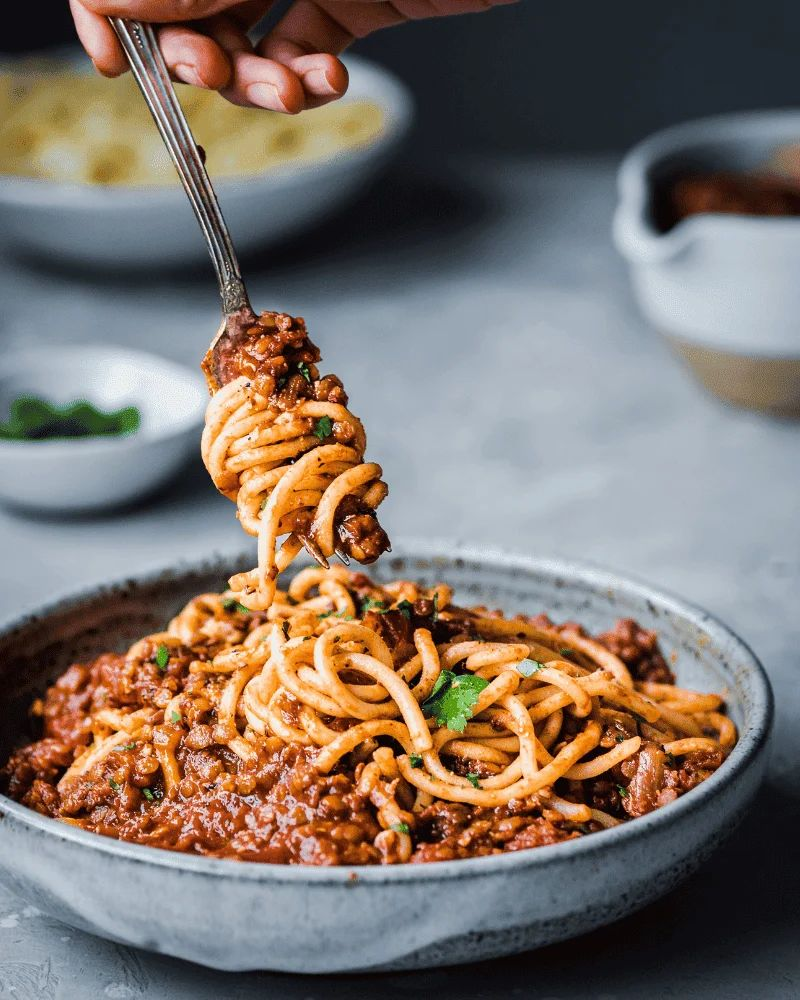
Dinner · 45 min · serves 8Lentil Bolognese- Dinner · 60 min · serves 6Make-Ahead Bean and Cheese Burritos
 Dinner · 30 min · serves 6Mediterranean Beef Wraps with Lemon-Feta Sauce
Dinner · 30 min · serves 6Mediterranean Beef Wraps with Lemon-Feta Sauce- Dinner · 40 min · serves 6Mediterranean Tuna Pasta
 Dinner · 105 min · serves 6Mujaddara (Lentils and Rice with Caramelized Onions)
Dinner · 105 min · serves 6Mujaddara (Lentils and Rice with Caramelized Onions)- Breakfast · 25 min · serves 12No-Added-Sugar Blueberry Muffins
- Dinner · 35 min · serves 1One-Pan Bang Bang Salmon Potato Bake
 Dinner · 60 min · serves 6One-Pot Spanish Chickpea Chicken
Dinner · 60 min · serves 6One-Pot Spanish Chickpea Chicken- Dinner · 25 min · serves 6Parmesan-Crusted Baked Tilapia
 Dinner · 40 min · serves 6Pasta e Ceci
Dinner · 40 min · serves 6Pasta e Ceci Dinner · 40 min · serves 6Pasta Primavera
Dinner · 40 min · serves 6Pasta Primavera- Dinner · 25 min · serves 6Peanut Noodles with Chicken
 Dinner · 35 min · serves 6Pesto Chicken Pasta
Dinner · 35 min · serves 6Pesto Chicken Pasta Dinner · 90 min · serves 6Polish Cabbage Rolls (Gołąbki)
Dinner · 90 min · serves 6Polish Cabbage Rolls (Gołąbki)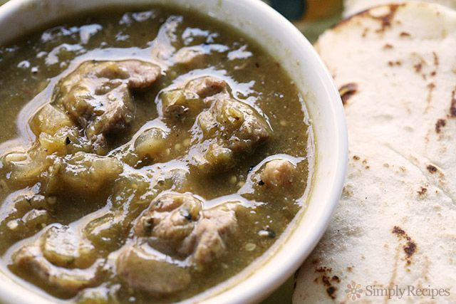
Dinner · 3.5 hr · serves 6Pork Chile Verde Dinner · 30 min · serves 6Pork Lo Mein
Dinner · 30 min · serves 6Pork Lo Mein- Dinner · 2.16667 hr · serves 6Pork Ribs
 Dinner · 30 min · serves 6Pork Souvlaki with Tzatziki
Dinner · 30 min · serves 6Pork Souvlaki with Tzatziki Dinner · 40 min · serves 6Punjabi Egg Curry
Dinner · 40 min · serves 6Punjabi Egg Curry- Dinner · 25 min · serves 6Quesadillas
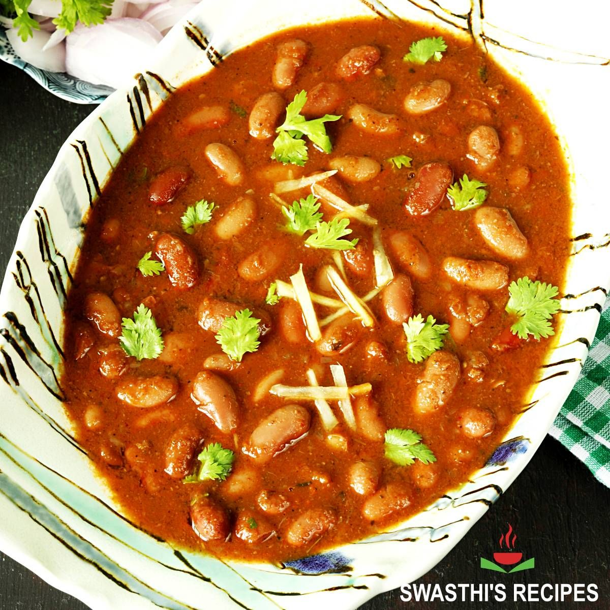
Dinner · 35 min · serves 6Rajma (Kidney Bean Curry)- Dinner · 60 min · serves 6Red Beans & Brown Rice
- Lunch · 30 min · serves 1Ritz Chicken Nugget Protein Bowl
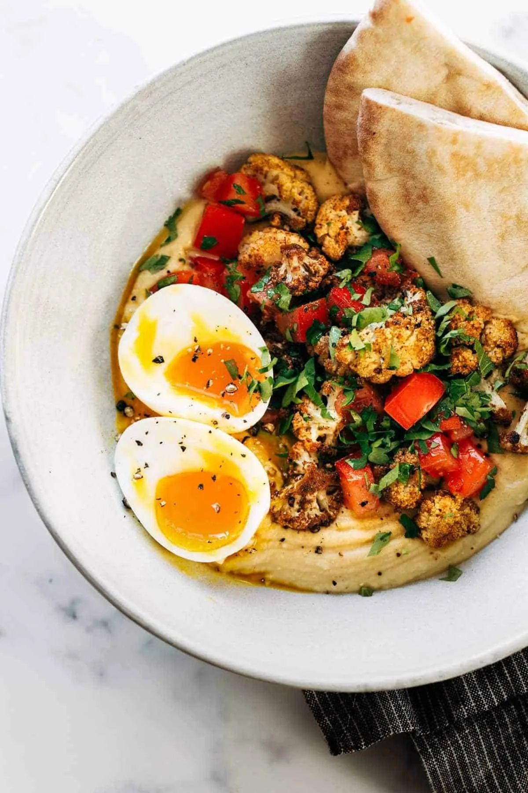
Dinner · 45 min · serves 6Roasted Veggie Hummus Bowls- Dinner · 35 min · serves 6Sausage & Fried Potatoes
- Dinner · 60 min · serves 6Sesame Tofu with Broccoli
- Dinner · 40 min · serves 6Shakshuka
- Dinner · 45 min · serves 6Sheet Pan Lemon Herb Chicken
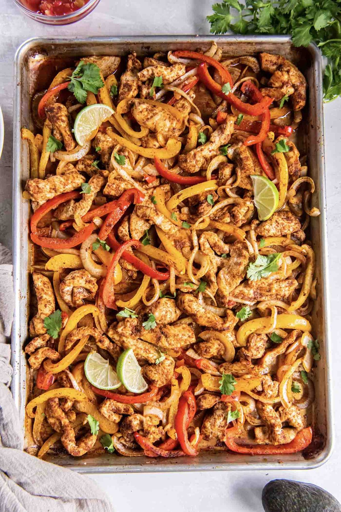
Dinner · 40 min · serves 6Sheet-Pan Chicken Fajitas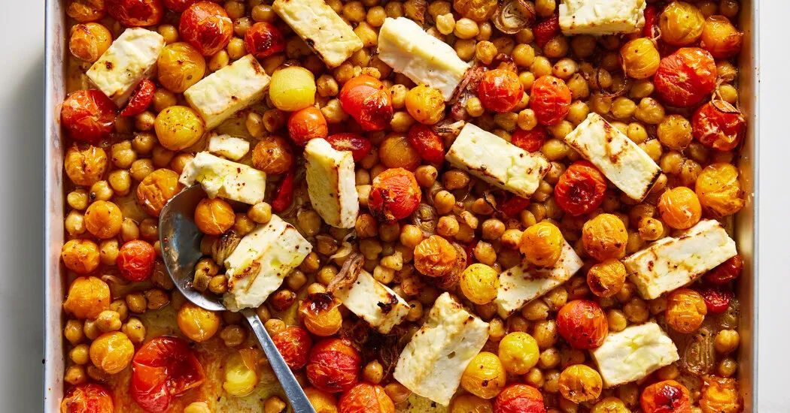
Dinner · 45 min · serves 6Sheet-Pan Chickpeas, Feta & Tomatoes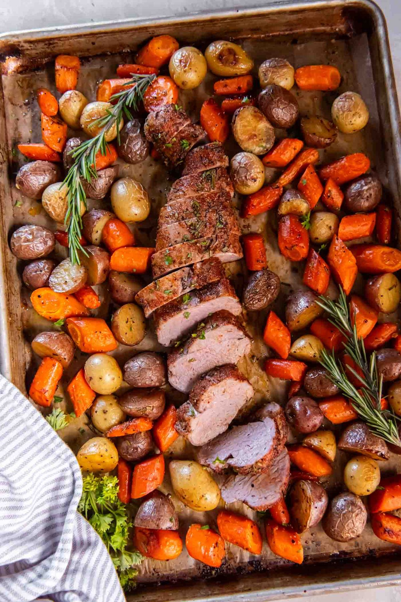
Dinner · 55 min · serves 6Sheet-Pan Pork Tenderloin with Potatoes & Carrots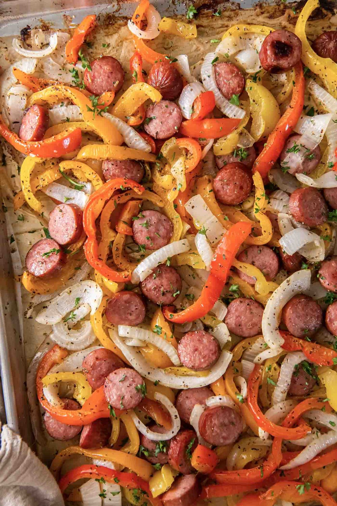
Dinner · 45 min · serves 6Sheet-Pan Sausage & Peppers- Dinner · 35 min · serves 6Shrimp and Grits
- Dinner · 25 min · serves 6Shrimp and Veggie Foil Packs
- Dinner · 40 min · serves 6Shrimp and White Bean Stew
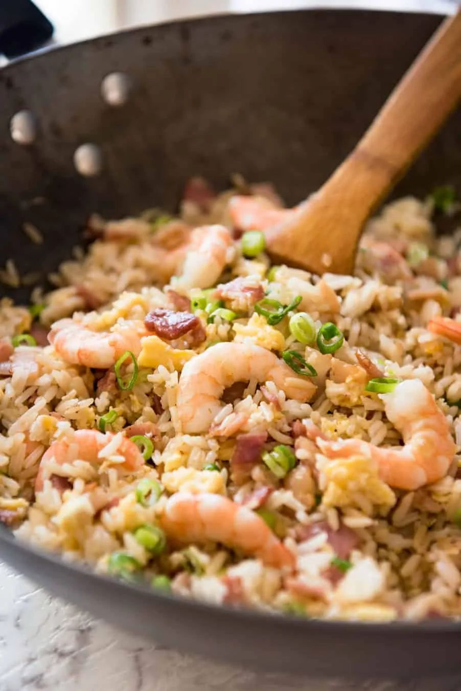
Dinner · 20 min · serves 6Shrimp Fried Rice- Dinner · 35 min · serves 6Shrimp Scampi Pasta
 Dinner · 30 min · serves 6Shrimp Stir Fry
Dinner · 30 min · serves 6Shrimp Stir Fry- Dinner · 35 min · serves 6Skillet-on-the-Grill Chicken Tortilla Casserole
 Dinner · 9 hr · serves 6Slow Cooker Beef Stew
Dinner · 9 hr · serves 6Slow Cooker Beef Stew- Dinner · 8 hr · serves 6Slow Cooker Black Bean Soup
- Dinner · 3 hr · serves 4Slow Cooker Chana Saag
- Dinner · 8 hr · serves 6Slow Cooker Corned Beef
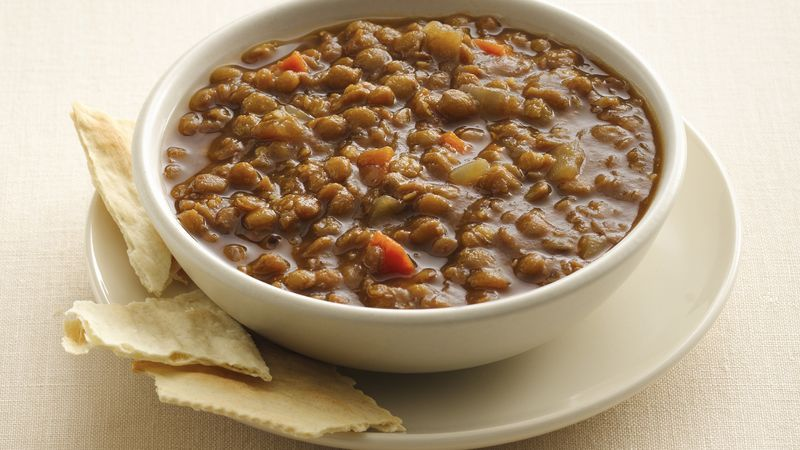
Dinner · 8 hr · serves 6Slow Cooker Lentil Soup Dinner · 9 hr · serves 6Slow Cooker Mexican Shredded Beef
Dinner · 9 hr · serves 6Slow Cooker Mexican Shredded Beef- Dinner · 5.5 hr · serves 6Slow Cooker Pork Carnitas
- Dinner · 70 min · serves 6Smoky Potato Chickpea Stew
- Dinner · 45 min · serves 6Spaghetti & Meatballs
- Dinner · 55 min · serves 6Spinach Lasagna Roll-Ups
- Dinner · 40 min · serves 6Spinach Ricotta Chicken Bake
 Dinner · 105 min · serves 6Split Pea Soup
Dinner · 105 min · serves 6Split Pea Soup- Dinner · 35 min · serves 6Steak Kabobs
 Dinner · 55 min · serves 6Stuffed Peppers with Beans & Rice
Dinner · 55 min · serves 6Stuffed Peppers with Beans & Rice- Dinner · 40 min · serves 6Sweet Potato & Ground Turkey Orzo Skillet
 Dinner · 65 min · serves 6Sweet Potato Black Bean Enchiladas
Dinner · 65 min · serves 6Sweet Potato Black Bean Enchiladas- Dinner · 30 min · serves 6Tacos
- Dinner · 30 min · serves 6Teriyaki Salmon Bowls
- Dinner · 5 hr · serves 6Tex-Mex Crockpot Chicken
- Dinner · 65 min · serves 6Tuna Noodle Casserole
- Dinner · 55 min · serves 6Turkey Baked Ziti
- Dinner · 45 min · serves 8Turkey Chili
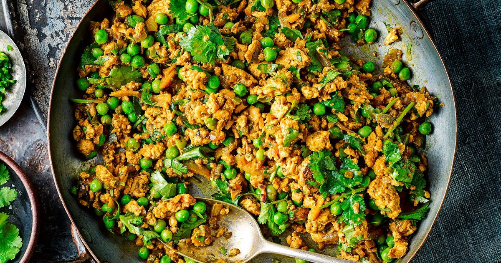
Dinner · 50 min · serves 6Turkey Keema Curry Dinner · 45 min · serves 6Turkey Meatballs in Tomato Sauce
Dinner · 45 min · serves 6Turkey Meatballs in Tomato Sauce Dinner · 75 min · serves 6Turkey Meatloaf
Dinner · 75 min · serves 6Turkey Meatloaf- Dinner · 45 min · serves 6Turkey Minestrone
 Dinner · 30 min · serves 6Turkey Sloppy Joes
Dinner · 30 min · serves 6Turkey Sloppy Joes- Dinner · 45 min · serves 6Turkey Zucchini Boats
- Dinner · 30 min · serves 6Tuscan Salmon Skillet
- Dinner · 25 min · serves 6Tzatziki Bowls
- Dinner · 55 min · serves 6Vegetarian Lentil Shepherd's Pie
- Dinner · 35 min · serves 6White Bean & Kale Soup
 Dinner · 40 min · serves 8White Chicken Chili
Dinner · 40 min · serves 8White Chicken Chili- Dinner · 35 min · serves 6Yellow Rice and Chicken
No recipes match. Try fewer filters.